Creative Breakdown — what worked, what didn't, and why
🎯 The three things that moved the needle
- Video crushed image. 11 video ads returned 3.12x ROAS vs 2.38x for 139 image ads (+31% lift). CTR was 2.08x higher (4.29% vs 2.06%). Every one of them ran to the Advent Calendar LP.
- Passover narrative + single-SKU story = the unlock. The top 3 revenue-generating ads all used cultural humor ("bubbe didn't have these", "reclining to the left like royalty") paired with one specific product's story and Mehadrin Kosher certification. Broad/LLA audiences + Passover seasonality carried $12,000+ in revenue across three creatives.
- The Advent Calendar (Miracle Box) is your flagship LP. 11 ads × 3.12x ROAS × 115 purchases. Every other LP either hemorrhaged spend or got no traffic. The bundle gift-angle is where your funnel converts.
🔥 What's actively costing you money
- 62 ads on a suspended account. TC2 is Meta-disabled (Ads Integrity Policy). Every ad on it is frozen — that's 41% of your library parked on a dead account holding $32,193 of lifetime spend.
- 23 disapproved creatives. Cannabis/THC compliance language is tripping Meta's review. Spend burns during review even if the ad never delivers.
- 4/20 ads launched too late. "30% Off The Holiest 4/20 Sale" ads were disapproved/underperformed — Meta throttles cannabis-adjacent during holiday spikes. Launch 14+ days early next cycle.
- Discount-led hooks (30%, 42% off) lost to story-led hooks. 42% OFF cohort: 1.67x ROAS. No-offer storytelling cohort: 2.40x ROAS. Price isn't the lever for this brand.
🏆 Top winners — dissected
Ranked by revenue contribution. Each card shows the actual creative, metrics, and pattern-matched explanation of why it outperformed.
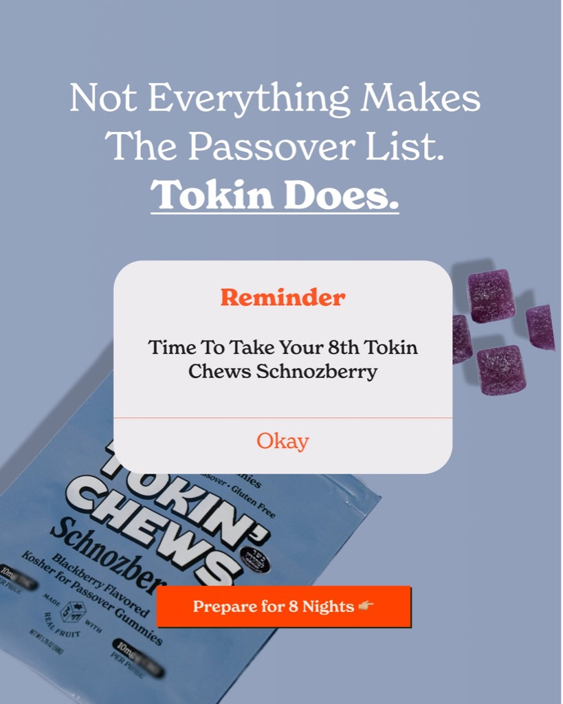
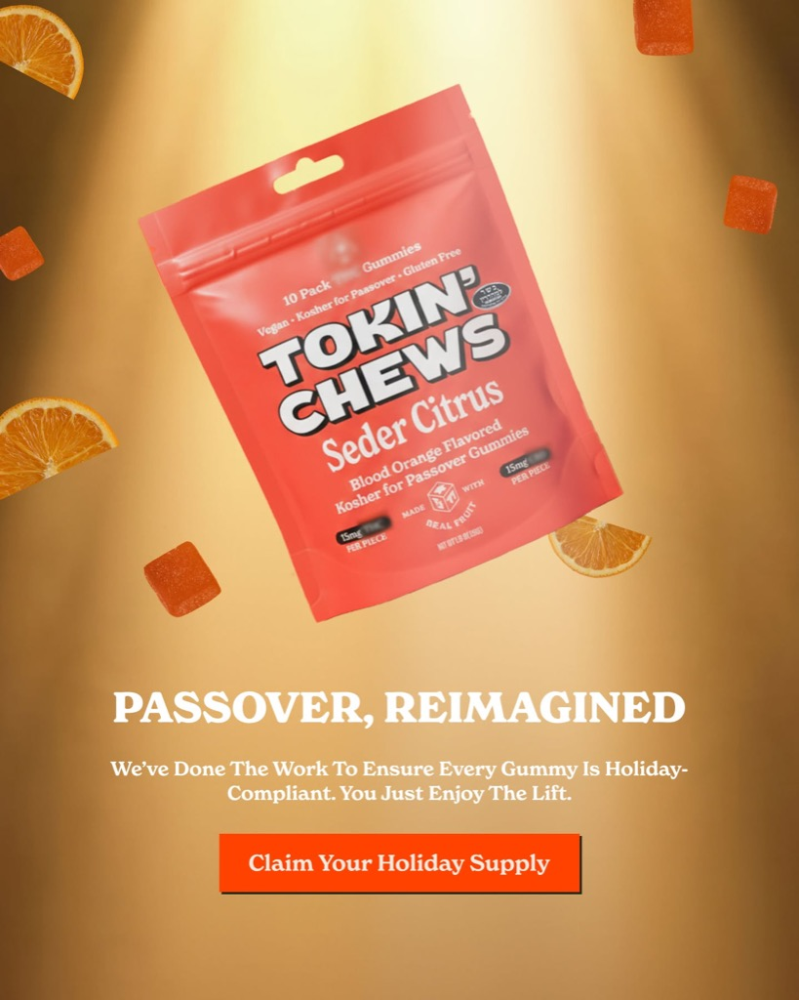
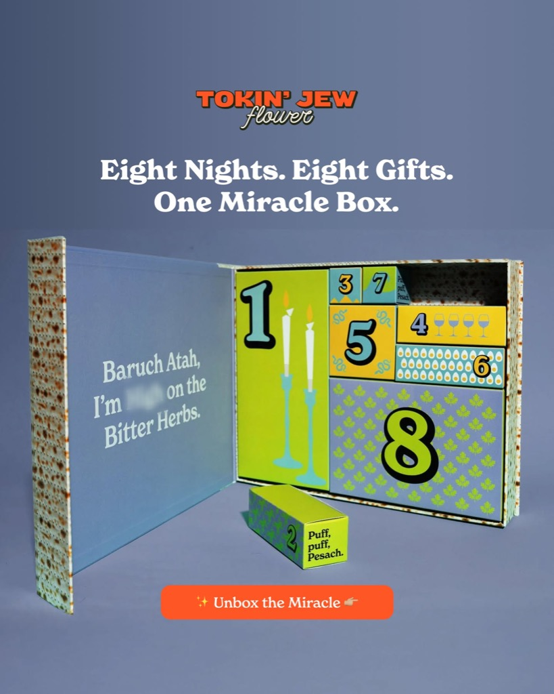
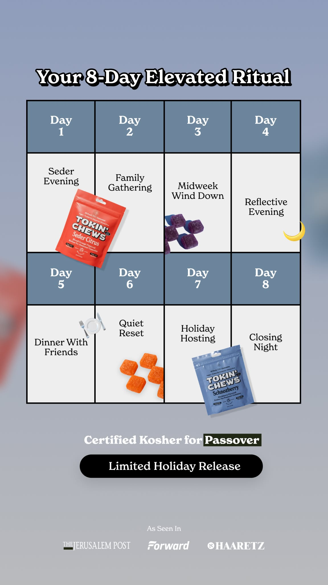
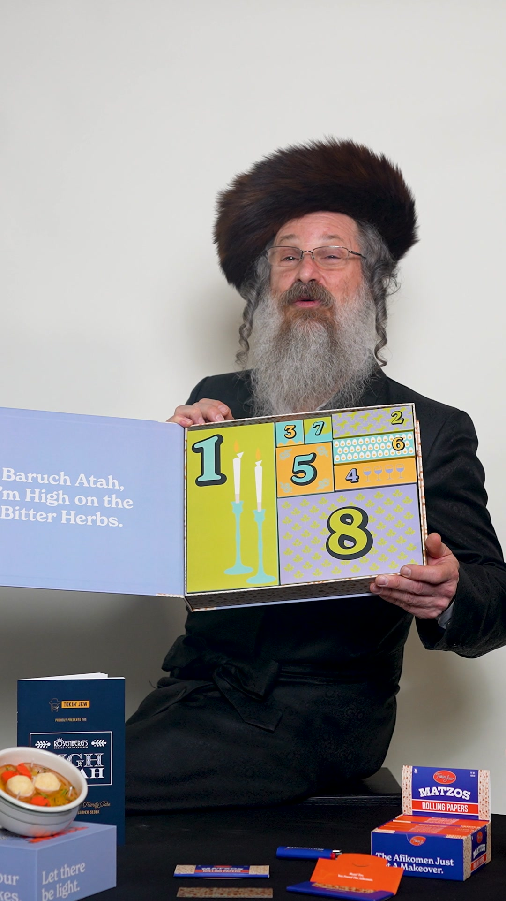
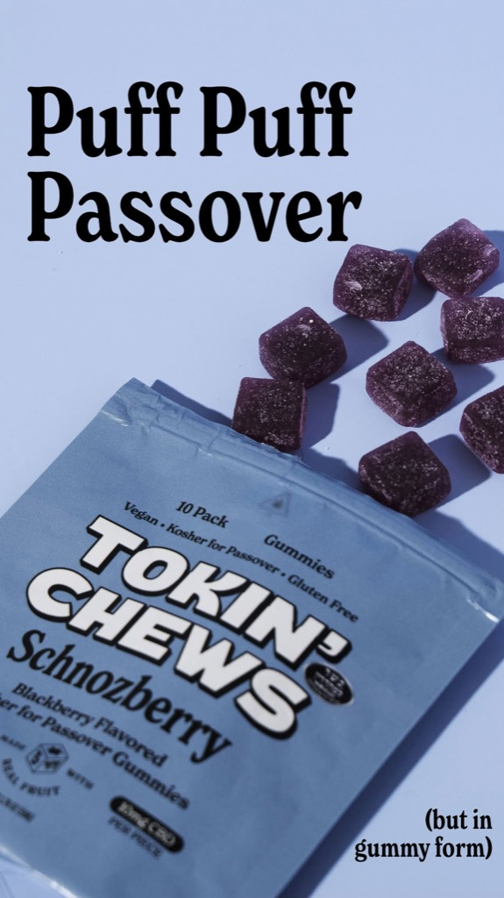

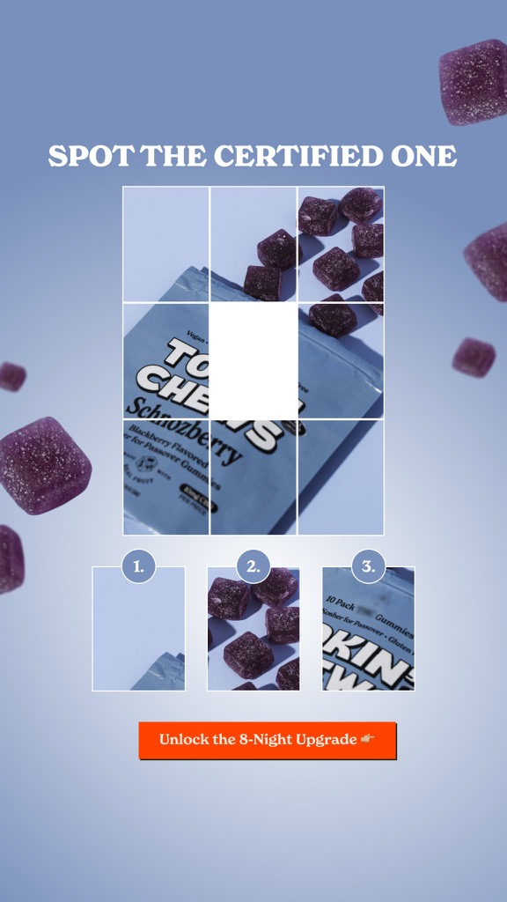
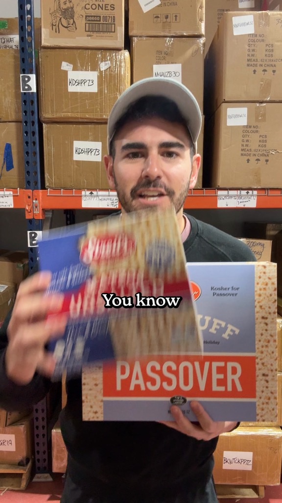
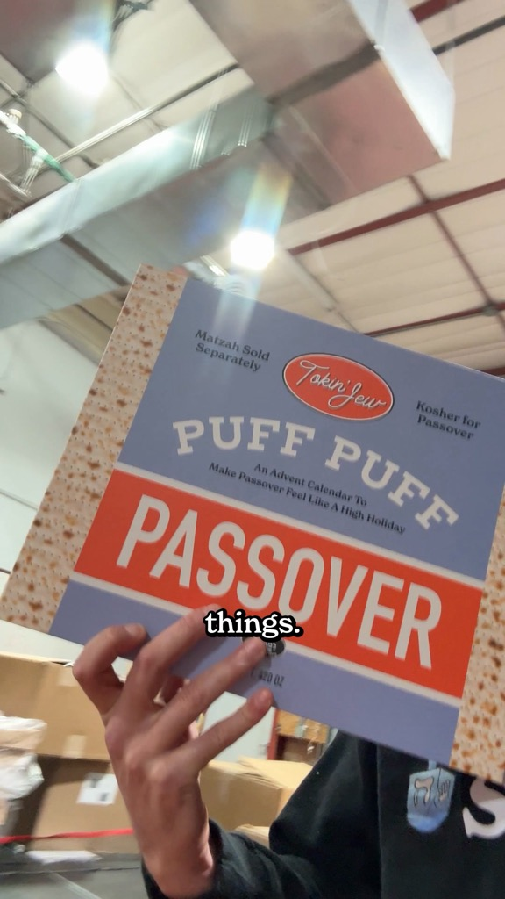
📈 Hidden scalers (best ROAS, underspent)
These ads returned 3.4x+ ROAS on small budgets. Feed them.
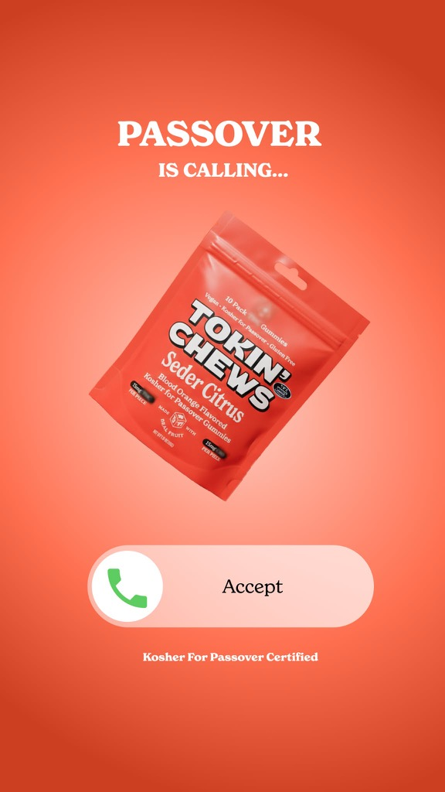


💀 Top losers — why they failed
Worst ROAS × spend combinations. Diagnosing root cause (not just "it didn't work").

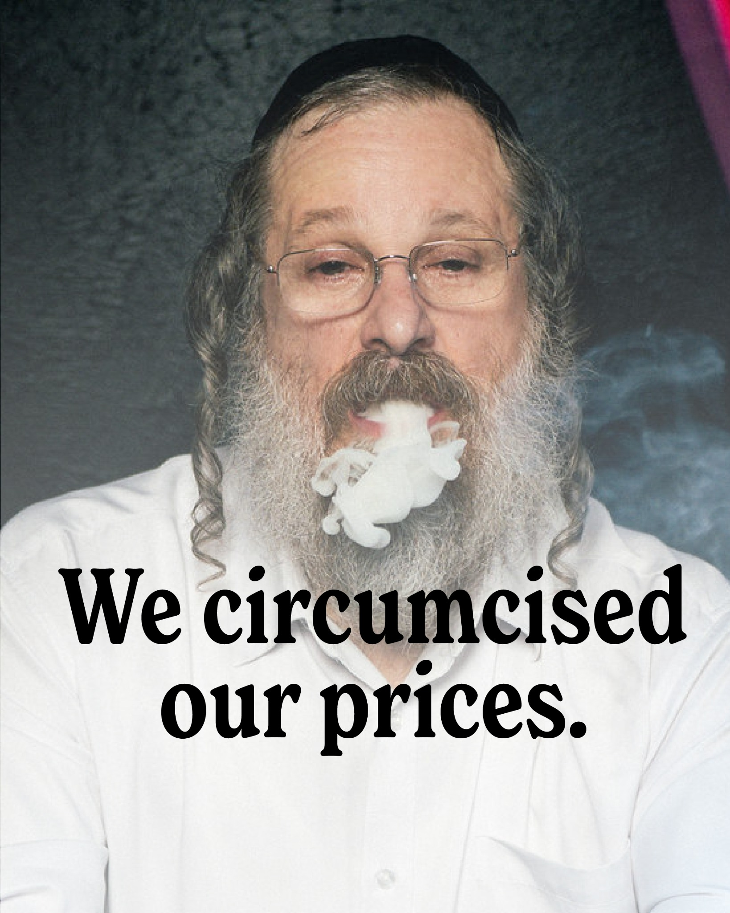
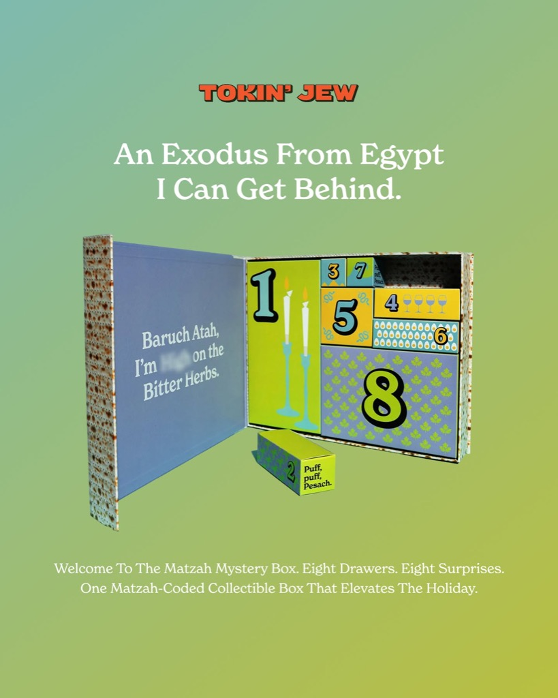


🔻 Full-funnel breakdown
Where the 1.42M impressions go, and where they leak.
The big leak is click → LP view. 17,730 clicks pay for nothing — they abandon before the LP loads, or Meta pixel misfires. Audit mobile page-weight (tokinjewflower.com) and verify GA4 / pixel deduping.
💰 Offer / promo performance
| Offer | Ads | Spend | Revenue | ROAS | CTR | CPP |
|---|---|---|---|---|---|---|
| (no offer) | 77 | $26,908 | $64,521 | 2.40x | 1.98% | $40 |
| FREE SHIP | 25 | $5,285 | $15,344 | 2.90x | 4.13% | $40 |
| 30% OFF | 18 | $2,261 | $5,815 | 2.57x | 2.66% | $32 |
| 42% OFF | 30 | $649 | $1,082 | 1.67x | 2.71% | $65 |
Counterintuitive finding: Free-shipping / free-gift language in-body (not as a discount) outperformed every % discount. The "no offer" cohort also beat 42% OFF. Lesson: this audience buys for story and identity, not price.
🎥 Format comparison
| Format | Ads | Spend | Revenue | ROAS | CTR | CPM | CPP |
|---|---|---|---|---|---|---|---|
| Image | 139 | $30,745 | $73,150 | 2.38x | 2.06% | $24.25 | $40 |
| Video | 11 | $4,359 | $13,612 | 3.12x | 4.29% | $27.90 | $38 |
Only 11 videos in the whole library. Avg video hook-rate: 35.4%, hold: 37.5%. Doubling video output is the single highest-leverage next move.
🎯 Landing-page performance
| Landing page | Ads | Spend | Revenue | ROAS | Purch | CPP |
|---|---|---|---|---|---|---|
| /products/advent-calendar | 11 | $4,359 | $13,612 | 3.12x | 115 | $38 |
| /products/blood-orange-kosher-for-passover | 14 | $926 | $1,732 | 1.87x | 16 | $58 |
| /products/schnozberry-1 | 7 | $1 | $0 | 0.00x | 0 | $0 |
| /collections/tokin-jew-gear-paraphernila | 20 | $0 | $0 | 0.00x | 0 | $0 |
Advent Calendar / Miracle Box is the only LP doing real work. Blood Orange and Schnozberry single-product LPs underperformed despite strong creatives — possible LP issue (price, bundle offering, trust signals). Gear/paraphernalia LP got almost no spend routed to it.
🧬 Creative concepts — winners vs rest
| Concept | Variants | Spend | Revenue | ROAS |
|---|---|---|---|---|
| not everything makes the passover list|your bubbe didn't have these at her seder | 1 | $6,420 | $13,479 | 2.10x |
| this passover will be different|the passover lineup is here. schnozberry brings | 2 | $3,330 | $7,342 | 2.20x |
| passover, reimagined|seder citrus sold out last passover. now it's back — and st | 2 | $3,315 | $8,481 | 2.56x |
| tj_420ads_2026| | 28 | $2,910 | $6,897 | 2.37x |
| eight nights. eight gifts. one miracle box|the host gift that actually gets talk | 1 | $2,424 | $5,987 | 2.47x |
| your 8 day elevated ritual|the passover lineup is here. schnozberry brings deep, | 2 | $1,988 | $6,200 | 3.12x |
| passoveradvent_3|the host gift that actually gets talked about at the table. | 1 | $1,953 | $6,818 | 3.49x |
| tj_420ads_2026|mazel tov — 4/20 is officially kosher. 🕎🌿 we blessed the pr | 18 | $1,810 | $4,824 | 2.66x |
| puff puff passover ad|the passover lineup is here. schnozberry brings deep, jamm | 1 | $1,470 | $4,332 | 2.95x |
| yes, they’re passover certified|seder citrus sold out last passover. now it's ba | 2 | $1,358 | $2,364 | 1.74x |
| spot the certified one|your bubbe didn't have these at her seder. but she would' | 1 | $1,152 | $2,377 | 2.06x |
| adventcalinwarehouse_1|the host gift that actually gets talked about at the tabl | 1 | $982 | $2,874 | 2.93x |
🚀 Recommendations — prioritized
Reinstate TC2 or migrate winners to TC3/TC4
TC2 holds $32k lifetime spend and 122/150 ads but is disabled (Ads Integrity Policy). File appeal + stand up dual-track delivery on TC3 immediately — every day TC2 stays dark, you lose incremental learning on your best audiences.
Fix the click → LP-view leak (54% loss)
17,730 clicks never register as LP views. Audit mobile page-weight on tokinjewflower.com, verify Meta pixel deduping, check for third-party redirect interception. Recovering even 30% of this leak = ~$13k incremental revenue at current funnel rates.
Triple video output
11 videos → 3.12x ROAS (+31% vs image) and 2.08x CTR. Commission 20–30 more videos in the same voice: single-product story, Kosher stamp, cultural humor, 5–8 sec hook. All routing to Advent Calendar LP.
Scale the 4 hidden scalers
4 ads sitting at 3.4x–3.8x ROAS on <$700 spend each. Move them into a consolidated campaign, raise budgets 50%/day until performance drops below 2x.
Kill discount-led creatives
42% OFF returned 1.67x ROAS; 30% OFF returned 2.57x. No-offer story creatives returned 2.40x with lower CPP variance. Remove discount-led headlines; reserve promos for retargeting only.
Launch a "single-SKU story" creative series
The winner pattern is crystal: one product's origin story + kosher cert + cultural humor + free-ship mention. Build 3 new flights — one per flagship SKU (Schnozberry, Seder Citrus, Advent Calendar). 3 concept variants × 2 formats × 2 lengths = 12 creatives.
Fix Blood Orange + Schnozberry single-product LPs
Strong creative traffic, weak conversion. Audit: price anchoring vs. Advent Calendar, trust badges above fold, bundle upsell, mobile CTA placement. Target: bring LP ROAS up from 1.87x → 2.5x+.
Pre-build next seasonal flight 14+ days early
4/20 ads launched too close to the date — disapproved/throttled. Passover creatives that launched Mar 6 dominated. Build Shavuot / Rosh Hashanah / Hanukkah creative pipelines 2–3 weeks before peak each.
Consolidate adsets — stop fragmenting LLAs
"LLA 1%", "Stacked LLA 1%", "LLA 1% 180d" duplicates split learning-phase signal across multiple adsets. Collapse into 1–2 consolidated adsets per campaign to let Meta's algo find scale.
Weekly creative kill-switch at $0.30 CPP threshold
Losers in this dataset all crossed $80+ spend before being paused. Put a daily automated rule: spend > 30% of target CPP AND 0 purchases = auto-pause. Saves ~$500/mo in sunk-cost ads.
Generated 2026-04-21 · back to dashboard